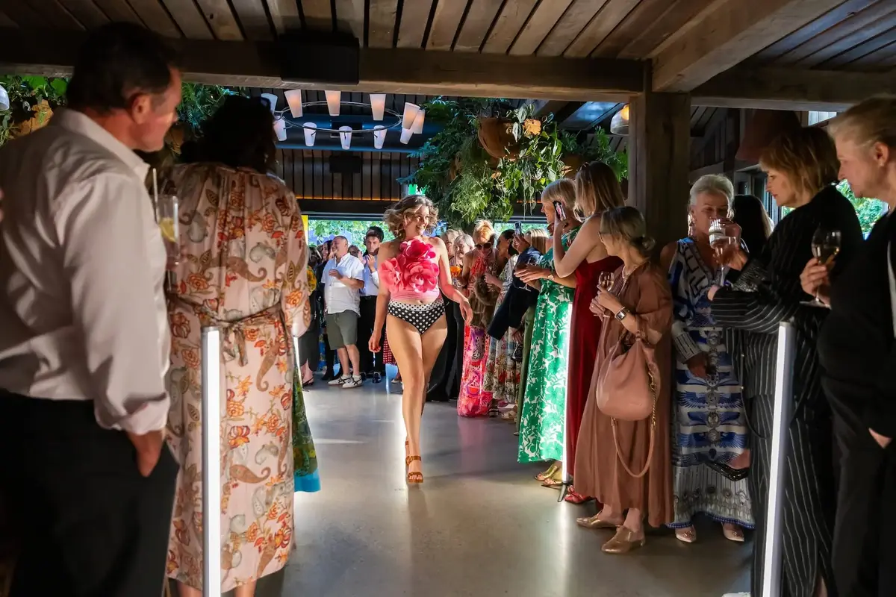

Your wedding has a lot of different moments, and each one needs something different from the AV. A quiet, clear mic for the ceremony. Background music during dinner. Then speakers and lights that get people on the dance floor later. We set up for all of it and make sure the transitions happen smoothly.
We've done weddings at vineyards, on farms, in woolsheds, at garden venues, and inside marquees. Every space is different and we adjust the setup to suit. We keep the gear discreet during the ceremony and speeches, then bring the energy up when the party starts.

A wireless mic for the celebrant, a music input for your chosen songs, and a small PA that sits in the background. Simple and clean. For outdoor ceremonies without power, we use battery-powered speakers so there's no cables running across the aisle.
Bigger PA for the reception space with wireless mics for speeches and plenty of volume for the dance floor. We manage the levels throughout the evening so speeches are clear and the music hits right when it needs to.
Festoon strings over the dining area, uplighting to wash the walls in warm tones, and dance floor lighting for later in the evening. We can go subtle or go hard, depending on what you're after. Marquee lighting is one of our most popular wedding add-ons.
We know weddings need a different touch to festival gigs. Things need to be on time, gear needs to look tidy, and the team on site needs to be presentable and easy to work with. We keep it low-key during setup and let you focus on the important stuff.
We can handle just the sound, just the lighting, or the full AV package. Have a look at our services page for everything we do, or get in touch to chat about your wedding.
Tell us about your wedding and we'll put a package together.
Get in touch or call 021 178 0355.
Yes. We do outdoor ceremonies and receptions regularly, on farms, at vineyards, in gardens, and under marquees. We have battery-powered speakers for ceremonies where there's no power nearby, and weatherproof gear for the unpredictable Canterbury conditions.
We set up a small PA with a wireless microphone for the celebrant and a music input for walk-in and walk-out songs. It's discreet and easy to manage. We can run it ourselves or show someone in the wedding party how to press play.
Of course. We can play music from your phone, a laptop, or a USB drive through our system. If you have a DJ for the evening, we'll have the DJ gear set up and ready to go. If it's just a playlist, we'll make sure the sound is right for the room.
All Ears Events Limited
20 Southwark Street, Christchurch
021 178 0355 · hello@allears.nz
Mon-Fri 9am-4pm